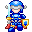
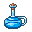

- 操作方法 -
■プレイヤーの移動
矢印キー([←] [↑] [↓] [→])で操作します。
■攻撃方法
敵に体当たりします。
接触する際、敵の向きによってダメージが変わります。
正面から→プレイヤーと敵に通常ダメージ
側面から→プレイヤーに半分のダメージ。敵に通常ダメージ
背後から→プレイヤーにはダメージなし。敵に二倍ダメージ
■レベルアップ
敵を倒すと経験値(EXP)が手に入ります。
一定の経験値(EXP)を取得するとレベルが上がり、最大HPが上昇します。
最大レベルは 20 です。
- キャラクターの紹介 -
クルース
主人公。プレイヤーが操作するキャラクターです。
ターファ姫
ドラゴンに攫われたお姫さまです。
彼女の救出が今回の冒険の目的の1つとなります。
- アイテム紹介 -
宝箱
換金アイテムが入っています。
特定の行動をとることで出現します。
 ポーション（青）
プレイヤーの体力を回復します。
ポーション（黒）
プレイヤーの体力を奪います。
金貨
ゴールドが少し加算されます。
金塊
ゴールドがそれなりに加算されます。
松明
明かりの範囲が広がります。
ある程度歩くと効果が切れます。
剣
プレイヤーの攻撃力が上がります。
特定の階でのみ出現します。
鎧
プレイヤーの防御力が上がります。
特定の階でのみ出現します。